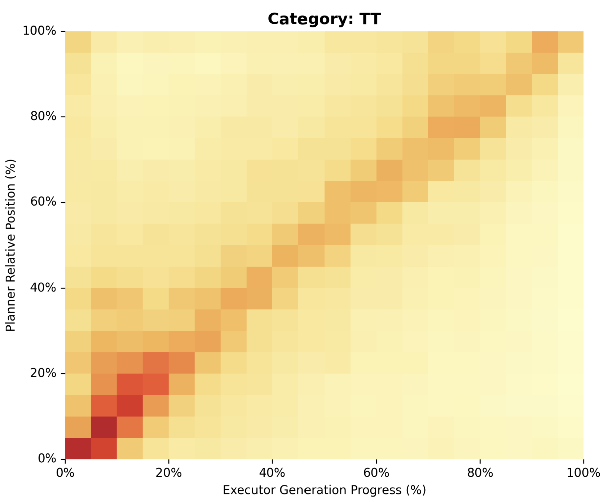
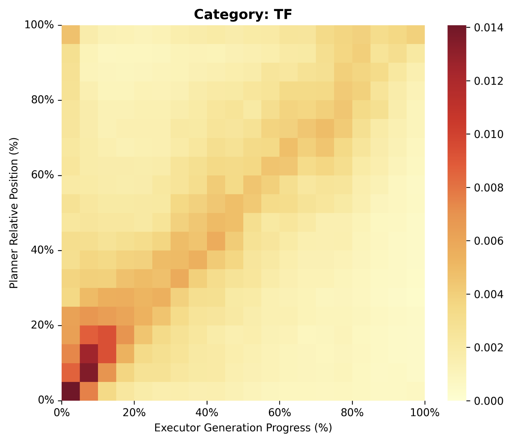
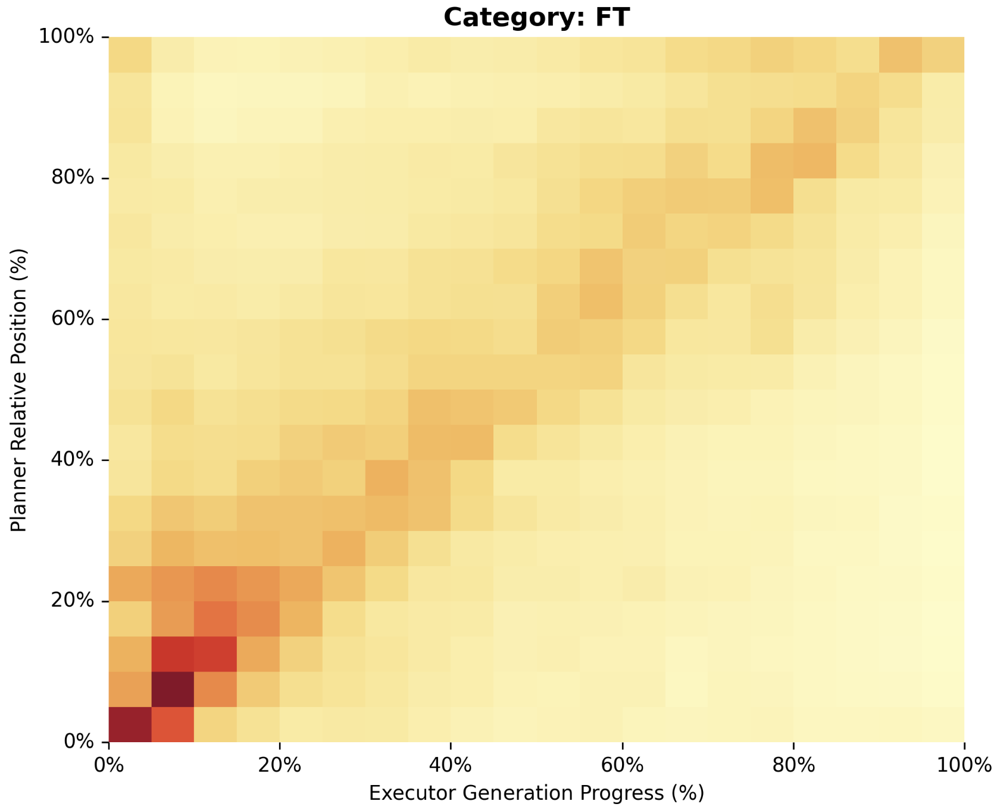
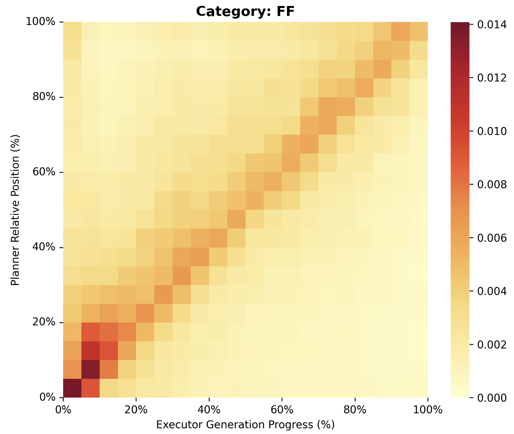

Understanding and Guiding Credit Assignment in Planner–Executor LLMs with Attention
How can internal attention reveal what information an LLM agent relies on, and can this signal support finer-grained credit assignment in multi-agent reasoning?
The final outcome is observable; the challenge is assigning credit to the right agent and the right parts of its trajectory.
Research Question
Outcome-level rewards supervise the final outcome, but provide limited information about which agent—or which parts of an agent’s trajectory—were responsible for it. I investigate whether internal attention can reveal this hidden interaction structure and provide a finer-grained signal for credit assignment.
Understanding Planner–Executor Attention Dynamics
Before using attention as a learning signal, I first study how the Executor uses the Planner’s output. I categorize trajectories by Planner and Executor correctness to examine how attention patterns change when the two agents succeed or fail together—and when their outcomes diverge.

TT
TF
FT
FFExecutor generally tracks the Plan.
Across all four correctness states, the Executor exhibits a visible diagonal tracking pattern over the Planner’s output. Even unsuccessful executions do not simply ignore the Plan, suggesting that execution failure can occur despite substantial Plan-following behavior.
Alignment
The Diagonal Score measures how closely the aggregated attention mass follows an idealized Plan-to-Executor diagonal. Neither Planner correctness nor Executor correctness alone fully explains the observed alignment pattern.
Tracking Dynamics
Centroid and Peak Tracking Error measure how far the Executor’s attention focus deviates from its expected position along the Plan. The mismatch conditions, TF and FT, exhibit larger tracking deviations than TT and FF.
Preliminary Planner–Executor attention analysis on Qwen2.5-1.5B-Instruct.
From Attention Dynamics to Cross-Agent Token Influence
The attention analysis raises a finer-grained question: which parts of the Plan does the Executor actually depend on?
This project is inspired by recent work showing that attention dynamics can reveal reasoning-critical tokens and support fine-grained policy optimization. Attention Illuminates LLM Reasoning.
My study focuses on a different setting: cross-agent attention in a Planner–Executor system. The head-selection criterion and token-scoring procedure are designed for this setting and differ from the mechanisms used in the prior work.
Planner-Focused Heads
Select attention heads according to their aggregated attention mass over the Planner span, retaining the heads most focused on cross-agent Planner information.
Cross-Agent Token Influence
Aggregate Executor-to-Planner attention across selected heads and generation steps to estimate the relative influence of each Planner token on the downstream execution trajectory.
Token-Level Weighting
Use high-influence tokens as candidates for increased policy-gradient weighting during Planner optimization.
Do Attention-Selected Tokens Actually Matter?
Attention magnitude alone does not establish that a token is functionally important. I therefore use token-level intervention: important tokens are identified from the original trajectory, masked without recomputing their importance, and followed by a fresh Executor generation.
Mask intervention
High-influence tokens are consequential.
Masking high-CATI tokens is substantially more disruptive than masking low-CATI or randomly selected tokens. This provides evidence that cross-agent attention can serve as a useful signal of token-level influence and dependency.
Influence Is Not the Same as Usefulness
The intervention results reveal a second, more subtle pattern: highly attended Plan tokens can be either helpful or harmful. Attention identifies information the Executor relies on, but does not by itself determine whether that information leads to a correct outcome.
High attention but harmful
Among the top-attention group, some plans are actively harmful even though the Executor strongly depends on them.
Low attention but helpful
Some helpful Plan information is not among the most strongly attended tokens.
Using Attention for Reinforcement-Learning Credit Assignment
I next asked whether the attention-derived signal could be used to provide finer-grained credit during GRPO training.
Directly allocating outcome-level reward according to attention underperformed the vanilla GRPO baseline in the current setting.
Adding token-level weighting on top of the agent-level allocation did not recover the performance drop.
Preliminary result: +1.74 percentage points over the 63.99% vanilla GRPO baseline.
Planner and Executor both receive the final outcome reward.
The Planner–Executor Bottleneck
The intervention studies suggest that Plan quality is a major bottleneck. A high-quality Plan can substantially improve execution, while noisy or misleading Plans can actively hurt performance.
Large oracle headroom
The gap between the no-plan and oracle-plan settings reveals substantial headroom for improving planning and inter-agent communication.
Noisy plans can hurt
The normal Planner currently underperforms the no-plan condition, suggesting that the interface is valuable only when the transmitted information is reliable.
What Happens to the Planner Under RL?
| Metric | Base Planner | GRPO Planner |
|---|---|---|
| Forbidden calculation rate | 90.52% | 95.75% |
| Contains true answer | 61.26% | 68.39% |
| Explicit equation | 88.17% | 93.18% |
| Plan logic correctness* | 73% | 65% |
* Preliminary API-assisted evaluation on the first 100 samples.
Rather than clearly becoming a better-structured planner, the trained Planner increasingly exposes intermediate calculations and final answers. This pattern suggests that outcome-only supervision may encourage shortcut behaviors that are not aligned with the intended planning role.
Current Understanding
Attention between Planner and Executor exhibits structured interaction patterns.
Planner–Executor correctness mismatch is associated with deviations in the Executor’s attention trajectory.
Cross-agent attention can identify Planner tokens that strongly influence downstream execution.
Influence does not necessarily imply usefulness.
Token-level credit appears more promising than naive agent-level attention allocation in the current experiments.
Planner quality remains a major bottleneck in the current experimental setting.
Ongoing Work
How can attention-derived influence be converted into reliable reinforcement-learning credit?